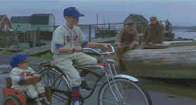

Simon
Birch/B+,A- |
Hollywood
Pictures/1998/114/WS 1.85 |
Simon Birch pulls at the heart strings. It makes no qualms about that,
yet the film is never maudlin, because the characters are fully developed.
Movies with physically deformed characters at their center
often fail because of short cuts. The source material for Simon Birch is John
Irving's novel A Prayer for Owen Meany and Irving has a unique sensibility toward
outsiders. Hence, through a fine adaptation by writer and director Mark Steven Johnson,
Simon remains an honest character with a sense of humor about his diminutive size and a
spiritual heart many times the size of his real one.
 |
Joe and sidekick Simon©Hollywood |
There are a few moments that
I felt too manipulated by the filmmaker. While I could watch Ashley Judd in slow motion
endlessly, I would have rather seen a particular scene in real time. I am not really sure
about some of the easy pot shots taken at a couple of characters, but I can live with it.
It does make it easier for kids to appreciate the black and white world.
There's an adventure movie at the heart of Simon Birch,
a spiritual adventure, but the great focus is on what faith means to different people.
Seen through the eyes of two twelve year old kids, each trying to understand their origins
and the meaning of their lives, the film remains true tot he world it sets up.
Ian Michael Smith is nothing short of fantastic as Simon Birch. I
believe every word this kid utters. There's no artifice in this performance. I've gotta
believe this young actor is digging deep into himself to help define the humanity of
Simon Birch. Joseph Mazzello is one of my favorite kid actors working. He presents a
screen sweetness that makes his characters very winsome. Hell, I can even believe this is
the kid that grows up to be Jim Carrey, as portrayed in the film. Ashley Judd….Ashley
Judd, I can't pass up the opportunity to say the name twice. This luminous actress lights
up any scene she's in, matching inner strength with kindness to create a series of strong
feminine characters. Oliver adds sensitive support for the young actors as an
understanding adult.
Marc Shaiman's score and the photography of Aaron Schneider
compliment the storytelling of Mark Steven Johnson. This is a first rate effort all
around. A fine film for adults and a wonderful film for kids too.
An outstanding transfer with sharp images and on target color.
Subtle lighting tones are preserved with great care on this transfer. I felt I could look
through the eyes of the actors into their inner selves aided by the striking transfer and
the fine performances. The 5:1 surround sound is absolutely beautiful. Ambient details
hang suspended in the air in the home theater environment.
|
|
Check out
the Movie
Poster Archive for short bios and images of Susan Hayward, Kirk
Douglas, Katharine Hepburn and many more. This month's featured star is John Wayne.
The Feature Archive
has articles ranging from Akira
Kurosawa to Blonde
Bimbos and John
Ford.

Click on the image of The Heistmasters
for an interesting feature on the tough guys that pull off the big jobs. |
HOT LINKS
etown.com
Venerable Internet Magazine etown.com is making
a big growth spurt adding veteran home theater writers to their editorial and review
staff. Look for many new hardware reviews in the coming weeks.
Classic Movies
Brad Lang movie site continues to be a great tool for Internet
surfers and movie lovers. As usual, he's found some interesting links. Check out the link
for a fine Japanese site on Kurosawa films. |
Home Theater Reference Reviewing System

When you read a DVD review it's of utmost
importance to know what equipment is being used to evaluate quality. Click on the
projectors to find out more. |
|
|